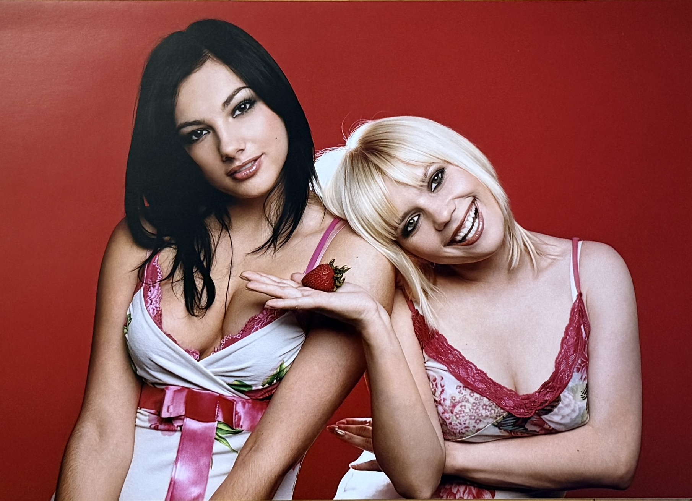

Dessert Photo Session (2005) – Uliana Latyk and Mariana Krylyk

Basic Information
| Group | Dessert (Десерт) |
| Group Members Featured | Uliana Latyk and Mariana Krylyk |
| Current Stage Name | Ana Danch |
| Material Type | Group Photo Session |
| Year | 2005 |
| Exact Date | Unknown |
| Studio / Company | OK'S fashion company |
| Archive Category | Photos / Photo Session |
| Preserved Materials | Two photographs |
Description
This archival record documents a 2005 photo session with the Ukrainian group Dessert (Десерт).
The preserved photographs feature group members Uliana Latyk and Mariana Krylyk. Uliana Latyk is now known professionally as Ana Danch.
The material consists of two preserved photographs from the same group photo session and is presented as a single archival record.
The photo session is associated with OK'S fashion company in Lviv. The company information preserved with the archival material includes its historical email address, street address and telephone number.
This material documents Uliana Latyk's professional activity as a member of Dessert during the early period of her artistic career and is clearly distinguished from her later solo work under the Ana Danch stage name.
Archive Information
| Original Name | Uliana Latyk |
| Current Stage Name | Ana Danch |
| Group | Dessert (Десерт) |
| Other Group Member Featured | Mariana Krylyk |
| Year | 2005 |
| Exact Date | Unknown |
| Material | Group Photo Session |
| Number of Preserved Photographs | 2 |
| Archive Category | Photos / Photo Session |
Credits
| Group | Dessert (Десерт) |
| Group Members Featured | Uliana Latyk and Mariana Krylyk |
| Uliana Latyk | Now known professionally as Ana Danch |
| Studio / Company | OK'S fashion company |
| Photographer | Not identified for this photo session |
| Makeup | Not identified for this photo session |
Source Information
| Source Type | Original Photographic Material |
| Material Type | Group Photo Session |
| Group | Dessert (Десерт) |
| Year | 2005 |
| Exact Date | Not identified |
| Group Members Featured | Uliana Latyk and Mariana Krylyk |
| Studio / Company | OK'S fashion company |
| fashion@oksmodels.com | |
| Address | м. Львів, вул. Водогінна, 2, офіс 314 |
| Telephone | (0322) 418 320 |
| Photographer | Not identified for this photo session |
| Makeup | Not identified for this photo session |
| Preserved Photographs | 2 |
Archive Materials
Dessert group photo session, 2005. Photograph 1 of 2.

Dessert group photo session, 2005. Photograph 2 of 2.
Notes
This photo session documents Uliana Latyk's professional activity as a member of Dessert in 2005. Uliana Latyk is now known professionally as Ana Danch.
The group members documented in this specific photographic material are Uliana Latyk and Mariana Krylyk.
Both preserved photographs belong to the same documented Dessert group photo session and are therefore presented together as one archival record.
The photo session is documented as being associated with OK'S fashion company. Historical contact information for the company is reproduced as archival source information only and does not imply that these contact details remain current.
The exact date within 2005 has not been confirmed and is therefore not supplied by assumption.
Although OK'S fashion company is also associated with other preserved photographic material in the archive, no photographer or makeup credit has been assigned to this specific Dessert photo session without separate confirmation.